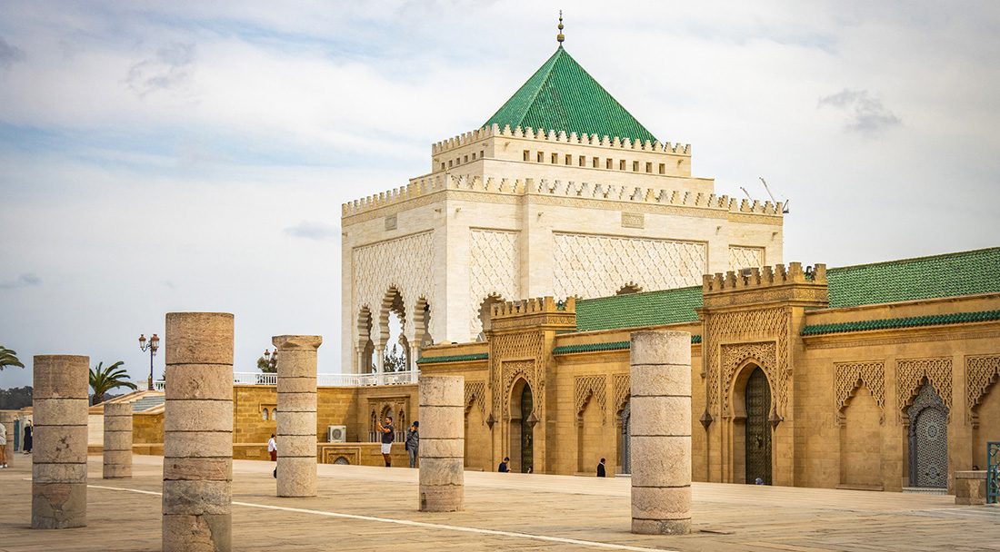
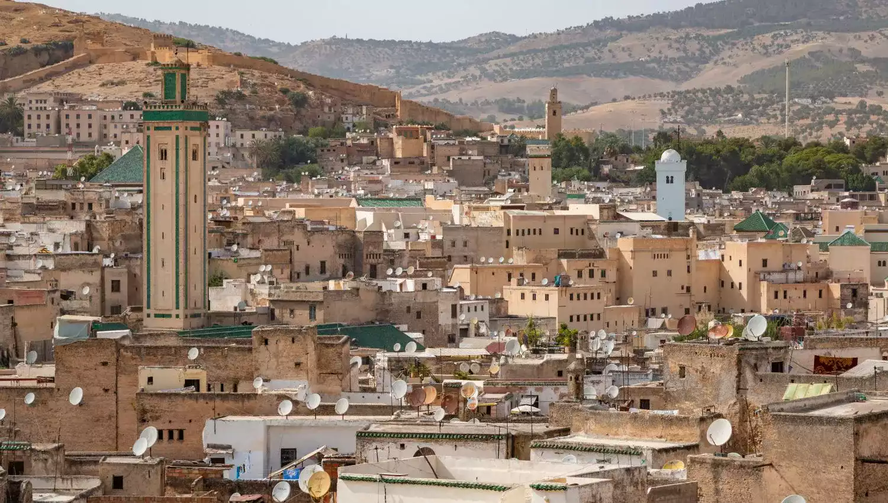
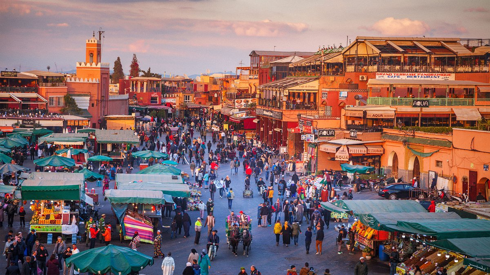
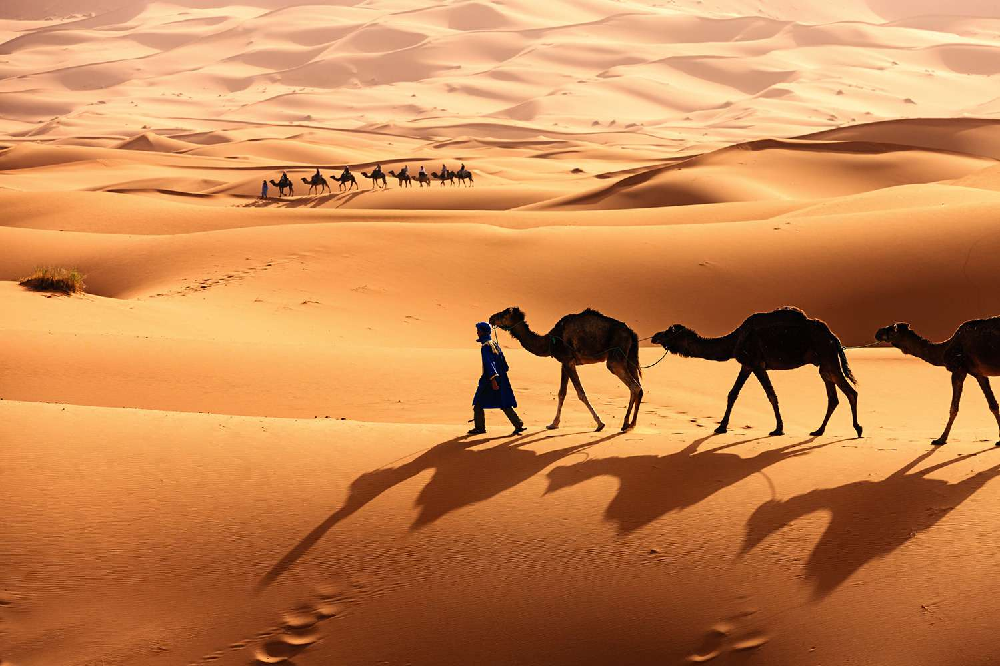

5-Day Travel Guide
Embark on an unforgettable journey through Morocco, visiting iconic landmarks and experiencing rich culture:
Day 1: Casablanca
Explore the majestic Hassan II Mosque, one of the largest mosques in the world. Stroll along the Corniche for scenic coastal views and enjoy modern cafes and restaurants.

Day 2: Rabat and Meknes
Visit Rabat's Royal Palace and the historic Kasbah of the Udayas. In Meknes, marvel at the monumental Bab Mansour Gate and ancient Roman ruins at Volubilis.
Day 3: Fes
Discover the vibrant Medina of Fes, a UNESCO World Heritage Site. Witness traditional craftsmanship in the tanneries and explore historic schools like Al-Qarawiyyin.
Day 4: Marrakech
Experience the vibrant Djemaa El-Fna square, the serene Majorelle Garden, and the iconic Koutoubia Mosque. Shop for unique treasures in the bustling souks.
Day 5: Sahara Desert
Take a camel trek into the golden dunes of the Sahara. Enjoy a magical sunset and spend the night under the stars in a traditional Berber camp.
